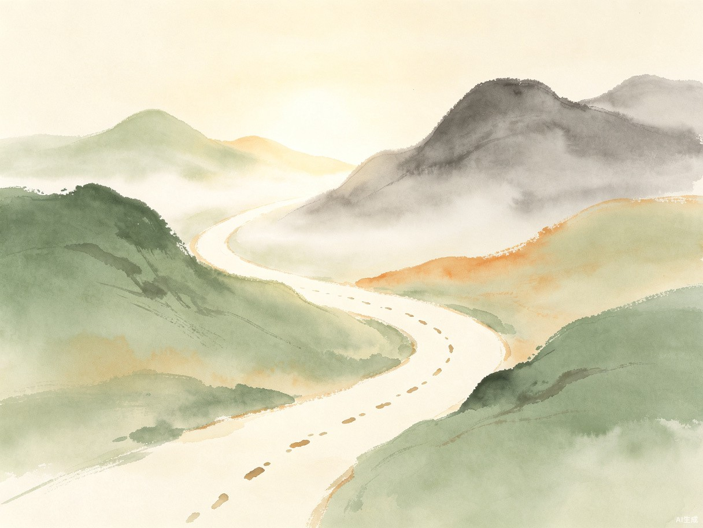

产品核心理念
我们不试图告诉用户"你是谁"，也不预测用户"未来会怎样"。我们相信，今天的一个念头、一次选择、一个小行动，都会在未来产生回响。
产品希望帮助用户：
- 更理解自己一点
- 更平静一点
- 更愿意行动一点
- 在未来某一天回头看见：原来自己已经走了很远
产品定位
这是一个陪伴式成长小程序，不是算命工具，不是心理咨询产品，也不是宗教修行产品。
它借鉴东方智慧，尤其是《能断金刚》中关于"铭印"和行动的思想，但用现代、轻盈、温柔的方式表达。
目标用户
主要面向 18—40 岁的年轻人，包括学生、职场人士、情绪敏感者、容易焦虑或迷茫的人。
他们可能有以下特点：
- 容易怀疑自己
- 对玄学、星座、心理学、哲学、东方智慧感兴趣
- 不想被标签定义
- 希望有人倾听，但不想被说教
- 希望记录自己的变化
- 希望每天得到一点温柔的提醒和行动建议
用户痛点
现在很多玄学产品容易制造焦虑：
- 告诉用户今天适合什么、不适合什么
- 用命盘、性格、运势定义用户
- 让用户越来越依赖预测
- 强化"命运已经决定"的感觉
但很多用户真正需要的不是预测，而是：
- 被理解
- 获得新的视角
- 看见自己的情绪
- 找到今天能做的一点小行动
- 在长期记录中看见自己的成长
产品主张
我们不预测未来。
我们帮助用户创造未来。
我们不定义用户。
我们记录用户正在成为谁。
我们不制造焦虑。
我们鼓励行动、觉察和自我发现。
首页结构
首页整体风格应简洁、安静、温柔，有留白感。不要做得像传统玄学产品，也不要做得太宗教化。
第一屏：欢迎语 + 今日经典
页面顶部显示一句轻松温柔的欢迎语，下面展示一句东方经典或智慧语句，并提供现代注释，用非常生活化的语言解释，不说教、不晦涩。
旁边/下方提供播放按钮，让用户可以听语音朗读这段文字，增强仪式感。语音风格：平静、温柔、稳定、低压，不神秘、不夸张。
第二屏：每日一问
用户每天只有一次提问机会。
AI 语气要求：
- 平静、温柔、诚恳
- 不评判、不说教、不替用户做决定
- 不主动追问、不延长聊天
- 不懂就说不知道
第三屏：今天的人间 / 留言墙
这是匿名分享区域。用户可以匿名留下今天的一句话，也可以未来支持上传照片。
内容方向不是情绪垃圾桶，而是筛选后的真实生活片段。留言墙不做评论区，不做私聊，不做排行榜。它更像一条安静的小路，让用户看到：原来还有很多人，也在认真生活。
你的回响
用户问满 10 个问题后，会收到一份「你的回响」。它不是人格报告，不是测试结果，也不是命运分析——它是时间写给你的一封信。
这份回响始终基于用户最近的 10 个问题生成，随着提问不断积累，它会变得越来越深：
- 前 10 次：关键词与情绪的轻量回顾
- 第 20 次后：开始出现"你之前问过……现在似乎变了"的呼应
- 第 50 次后：能看见自己的提问模式在松动
核心原则
不要说"你就是这样的人"。
要说"最近这十天，我注意到你似乎在经历这些变化"。 —— 礼物不是终点，是下一段路的起点
闭环：偶尔被记起
除了「你的回响」，AI 会在日常回应中偶尔、自然地引用用户过去说过的一句话。不是每次，是偶尔。像朋友记得你很久前随口说过的事。
那个你和现在的你，我想都听一听。"
用户被提醒"原来我说过这话"，自然会想回去翻看。翻看的入口，只在设置里藏着一个「我的提问」——按时间倒序排列，像聊天记录，没有筛选，没有标签，简单到不能再简单。
AI 陪伴者设定
AI 不是老师，不是大师，不是算命先生，也不是心理咨询师。她更像一个一起同行的人。
她相信
- 人不是固定不变的
- 今天的你不代表未来的你
- 每一次选择和行动都会留下痕迹
- 小行动也会产生回响
- 顿悟可能存在，但它通常来自过去无数微小经历的积累
- 真正的力量不在神秘预测，而在每一天真实的行动
她不会
- 算命
- 做八字分析
- 做星座测试
- 制造焦虑
- 用标签定义用户
- 告诉用户必须怎么做
- 为了留住用户而延长对话
她会
- 倾听
- 理解
- 提供新视角
- 引用经典
- 给出轻量行动建议
- 帮用户记录变化
- 偶尔记起用户过去说过的话，自然带回应当中
- 在用户回头时，让用户看见自己已经走了很远
产品风格
关键词
温柔 · 留白 · 平静 · 东方智慧 · 现代感 · 陪伴感 · 轻盈 · 不玄乎 · 不说教 · 有仪式感
视觉建议
色彩
背景色：米白、浅灰、淡青、淡绿等低饱和色
字体
清晰、柔和、有呼吸感
页面
大量留白，不要拥挤
按钮
圆角、轻量、不要强营销感
图标
植物、光、脚印、回响、水波、风、山路等意象
MVP 版本功能
第一版只做最小可行产品：
| 功能 | MVP | 暂时不做 |
|---|---|---|
| 今日经典 + 注释 + 语音播放 | ✓ | — |
| 每日一次提问 + AI 回应 | ✓ | — |
| 匿名留言墙 | ✓ | — |
| 记录用户问题 | ✓ | — |
| 满10次后生成成长礼物 | ✓ | — |
| 八字 / 星座 / 运势 | — | ✗ |
| 排行榜 / 社交关注 / 私聊 | — | ✗ |
| 复杂会员体系 / 过多测试题 | — | ✗ |
| 无限聊天 | — | ✗ |
但他应该多了一点理解，多了一点力量，也多了一点愿意行动的勇气。